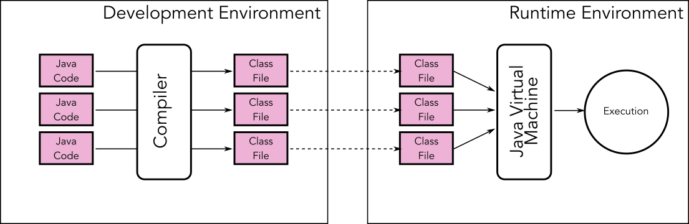
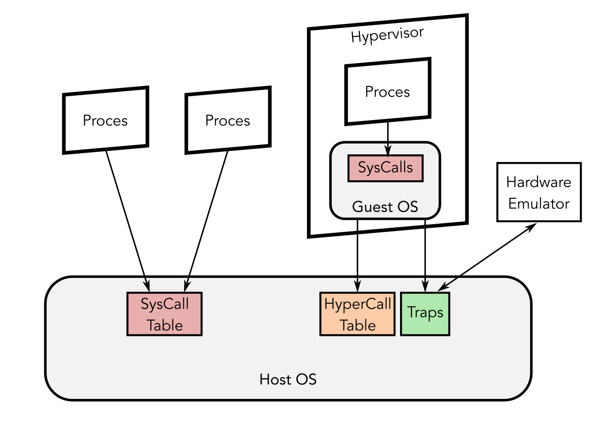
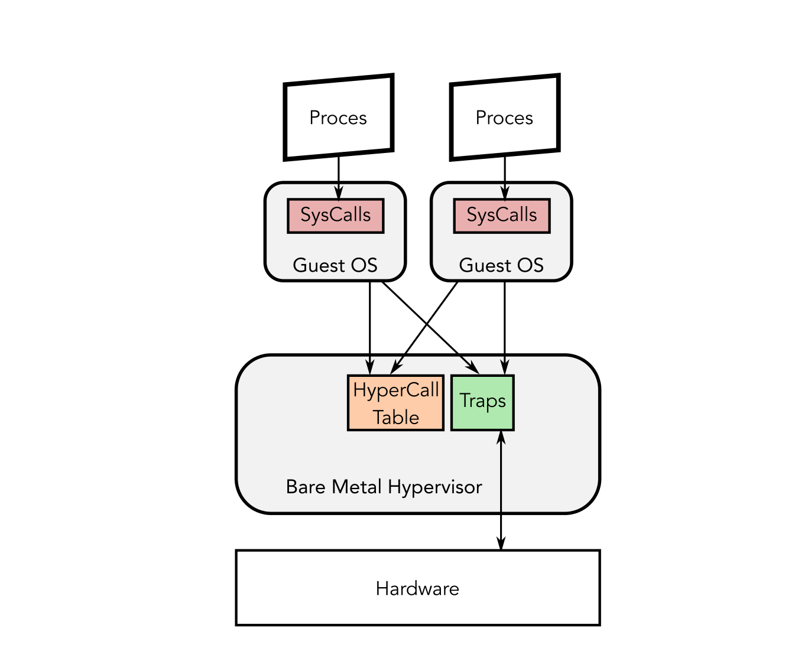
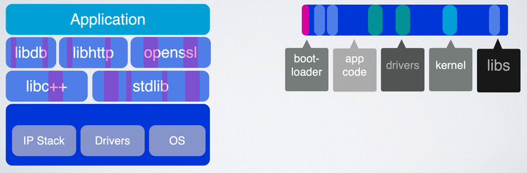

Virtualisation en Microcontrollers
Embedded & Operating Systems 9
Introductie
Bytecode Virtual Machines

Hardware Virtualisation

Bare-Metal Hypervisors

Containers

Microcontrollers

Development Pipeline
Geheugengebruik bij microcontrollers

Peripherals
Microcontroller Libraries: Hardware Abstraction Layer
- RPi.GPIO
- Wiring (Arduino)
- Hwlib
- BIOS
Library Operating Systems en Unikernels

Wat hebben we deze les geleerd?
- Bytecode-gebaseerde virtual machines
- Hosted en bare-metal hypervisors
- OS-level virtualisation met containers
- Verschillen in development pipeline voor microcontrollers
- Verschillen in geheugengebruik tussen OS en microcontrollers
- Libraries voor microcontrollers